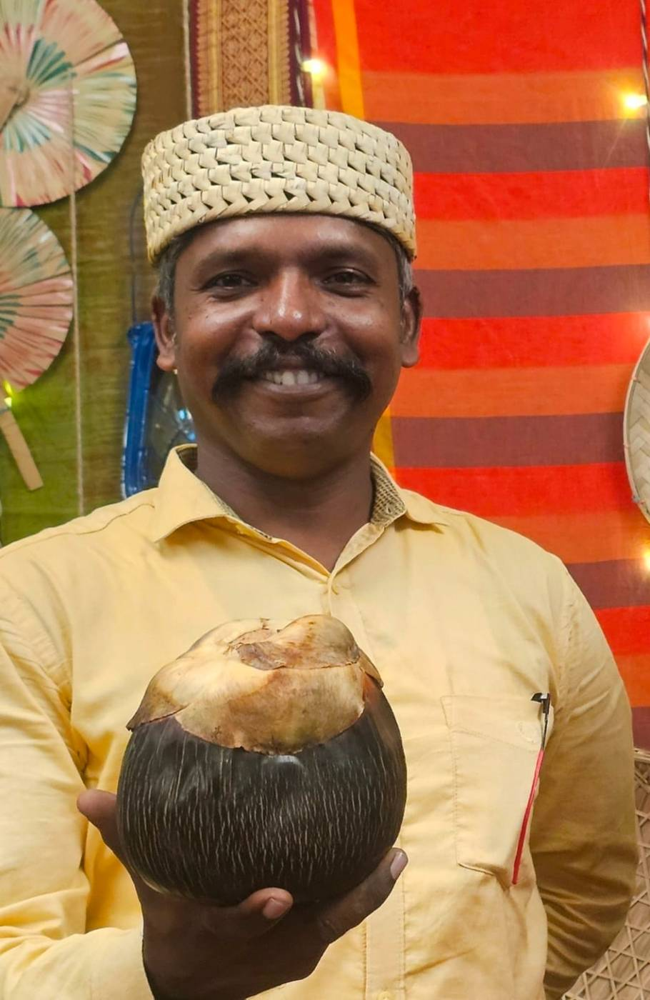

First palms on campus
The idea began in 2019. Students planted palms around the Asian University for Women campus as a natural fence. It was the movement’s very first green bangle.
GBM began with a simple question: what if coastal protection, women’s work and climate education could be woven into the same circle?
It started in 2019, when students planted palms around the Asian University for Women campus as a natural fence, and was formally launched on 21 September 2023. From there it spread to the coastal village of Guliakhali in Sitakunda, where students, local women and community leaders now work together on nurseries, mangroves and palmyra palms.
The movement was inspired by Wangari Maathai’s Green Belt Movement in Kenya. Students who look after the nursery and do fieldwork are known as “Green Warriors”, and they come from 18 countries across Asia.
Why “bangle”? In South Asia, the bangle is a symbol of women’s strength. Our logo shows three hands wearing bangles, and our green bangles are living ones: rings of trees along the shore, planted by the women who live there.


Founder and Lead Mentor, Green Bangle Movement
Director, Environmental Sciences Program, Asian University for Women
With a lifelong passion for sustainable development, traditional ecological knowledge and community-centred innovation, Dr. Selvakumar started the Green Bangle Movement as a bridge between science, women’s empowerment and ecological restoration. His leadership has shaped GBM into a community-driven initiative rooted in hope, resilience and hands-on environmental action.
View full profile and achievements“A bangle is never a single strand — it is many hands, closing a circle of care around the land.”
Dr. P. Mosae Selvakumar
GBM’s work on the coast is made possible by these organisations.
Funds the Green Bangle Project’s planting work in Guliakhali.
Facilitates the project in the field and shares mangrove planting techniques.
Research partner, providing research materials and technical support.
Our home. AUW gave half an acre of its Arefin Nagar campus for the Shyamol Churir Nursery.
From a few palms on campus to the coastline. Jump to any step, or select a photo to see it larger.
The idea began in 2019. Students planted palms around the Asian University for Women campus as a natural fence. It was the movement’s very first green bangle.
An annual celebration at AUW where students, faculty and local women rediscover the palmyra palm. At the 2024 festival, women from Sitakunda and AUW students showed 20 dishes and products made from every part of the fruit.
The Green Bangle Movement was officially inaugurated at the AUW campus in Chattogram, with funding from the Swiss Philanthropy Foundation and YPSA as its local partner.
With visiting experts, young women learned to report on the environment and tell climate stories from their own communities, and gained the confidence to speak up.
On a half-acre plot at AUW’s main campus, students and women from the coast learn sapling care, soil preparation and nursery management, then raise Keora mangroves and thousands of palm saplings together.
Students and coastal women plant mangroves along the Guliakhali shore in Sitakunda. Their dense roots hold shifting soil in place and absorb wave energy during cyclones.
Volunteers plant native palmyra palms and date palms. These heat-resistant trees grow tall with deep roots, and are planted in rural Bangladesh to help reduce lightning deaths.
Student “Green Warriors” spend days planting and working the soil, and tree-climbing workshops on campus build confidence and practical skills among women students and staff.
Volunteers plant native species on degraded hillsides around Chattogram, where roots help stabilise slopes and bring habitats back.
With Chattogram City Corporation, YouthNet Global and local schools, the movement has sown hundreds of palmyra seeds along the Patenga airport road and run student planting drives at Prabartak School and College.